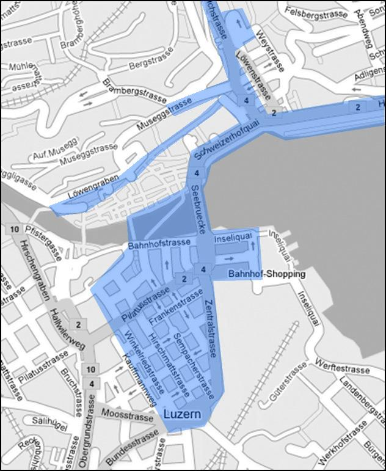

Blog
Web 2.0 Logos
Unter dem sinnigen Titel „Corporate World Meets Web2.0“ findet sich auf http://flickr.com eine ganze Reihe (nicht so ganz ernst gemeinter) Designvorschläge für Logos bekannter Marken: http://flickr.com/photos/gtmcknight/198311028/
Nach dem immer gleichen und recht simplen Rezept: man nehme ein paar Verläufe sowie einen Spiegeleffekt und fertig ist die süsse Web 2.0 Leckerei (nach Belieben mit noch "Beta" oder "2.0" abschmecken).
Das ganze lässt sich als eine Parodie auf diese Compilation sehen: http://www.flickr.com/photos/stabilo-boss/93136022/
Firmen, die nach nach folgendem Motto leben: wir sind doch mindestens so cool wie Youtube, warum hat uns Google noch nicht gekauft?
Für alle anderen, die auch so langsam nicht mehr um web 2.0 Designfragen herumkommen, noch ein paar interessante Links:
http://www.drweb.de/weblog/weblog/?p=525
http://www.drweb.de/weblog/weblog/?p=518
http://www.drweb.de/weblog/weblog/?p=765
http://www.uneasysilence.com/archive/2006/04/5885
{kind=link}
Wem gehört "schweiz.ch"?
Die Bundesbehörden gehen bei ihrem Kampf um die Domain www.schweiz.ch in die Offensive. Nach dem Verhandlungen mit dem langjährigen Inhaber der Adresse offenbar gescheitert sind, geht die offizielle Schweiz vor die Weltorganisation für geistiges Eigentum (Wipo). Nach der bisherigen Entscheidungspraxis stehen die Chancen für die Bundesbehörden gut.
Im Fall von www.luzern.ch entschied das oberste Schweizer Gericht zu Gunsten der Stadt Luzern und der private Inhaber musste seine Domain abgeben. Bei einem ähnlichen Fall sprach das Gericht im Jahre 2000 die Domain ww.berneroberland.ch der Tourismusorganisation Berner Oberland zu.
Wetteralarm
Neu ist das Alarm-Angebot der kantonalen Gebäudeversicherungen kostenlos.
Die Meldungen kommen wahlweise per SMS, E-Mail oder Fax.
Die Meldungsarten können nach Regionen (PLZ), Ereignisen und Warnstufen personalisiert werden. Die Daten werden von SF Meteo bereitgestellt.
Die beteiligten Partner erhoffen sich vom Frühwarsystem eine Reduktion der Schadensumme im Ernstfall.
Wie schnell sind Schweizer Newsseiten?
Heute gegen 21:00 Uhr meldete der US-amerikanische Sender CNN einen Flugzeugabsturz mitten in New York. Das Unglück soll gegen 14:45 Uhr Ortszeit (20:45 Uhr MEZ) passiert sein. Gedanken an den 11. September 2001 wurden wach.
Wie aktuell sind die Schweizer Newsseiten und können sie flexibel auf solche Ereignisse reagieren? Hier die Resultate:
- 21:09 Uhr: Blick online1
- 21:11 Uhr: SwissTXT
- 21:15 Uhr: Schweizer Fernsehen
- 21:16 Uhr: BaZ
- 21:17 Uhr: 20 Minuten
1Bei Bilck online lautete die Überschrift die ersten Minuten "Kelinflugzeug rast in Hochhaus". Kleiner Tippfehler im Redaktionsstress...
WLAN Luzern
Das öffentliche WLAN in der Stadt Luzern nimmt langsam Formen an. Als ein Pilotprojekt in der Schweiz versorgt der städtische Energieanbieter ewl weite Teile der luzerner Innenstadt mit einem WLAN. Die notwendigen Sender wurden dabei in die öffentliche Beleuchtung integriert.
Zur Zeit ist der Zugang für alle User kostenlos, jedoch besteht eine zeitliche "Surfbegrenzung".

Die WLAN-Abdeckung in der Stadt Luzern (Ausbaustand Juni 2007)
Informationen ewl: http://www.ewl-luzern.ch/?rub=65&id=100086